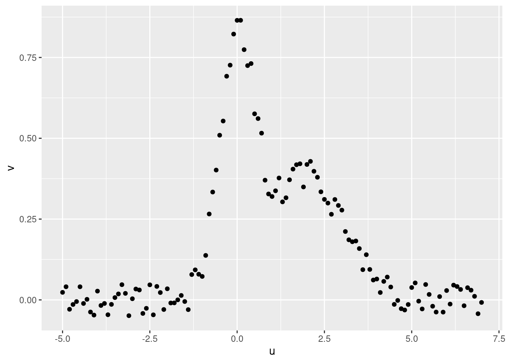
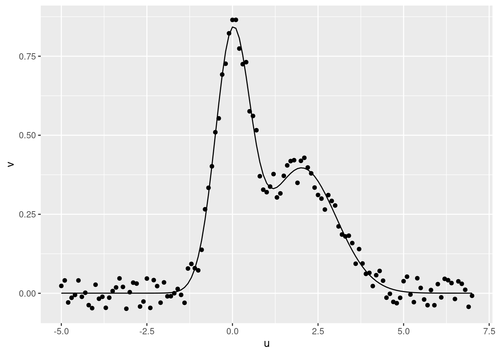
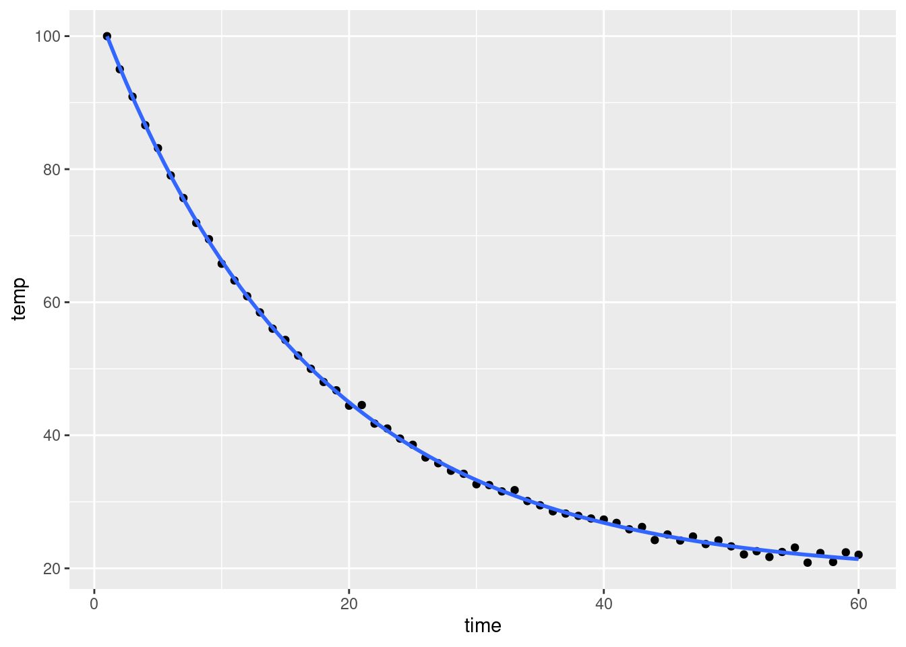

3.1 The nls() workhorse
Nonlinear Least Squares
3.1.1 Datos
Create fake data
us <- seq(-5,7,.1)
vs <- dnorm(us, mean = 0, sd = 0.5) + dnorm(us, mean = 2, sd = 1) + runif(length(us))/10 - 0.05
data_nls <- tibble(u = us, v = vs)Plot
ggplot(data = data_nls, mapping = aes(x = u, y = v)) +
geom_point()
3.1.2 Ajuste
Create a function to fit the data
v_model <- function(u, mu, muB, sdA, sdB){
mu + dnorm(u, mean = 0, sd = sdA) + dnorm(u, mean = muB, sd = sdB)
}Fit the data using the v_model function
fit_nls <- nls(
data = data_nls,
v ~ v_model(u, mu, muB, sdA, sdB),
start = list(
mu = 0,
muB = 1.5,
sdA = 0.2,
sdB = 0.2
)
)
fit_nlsNonlinear regression model
model: v ~ v_model(u, mu, muB, sdA, sdB)
data: data_nls
mu muB sdA sdB
0.0003686 2.0234483 0.5053066 1.0064936
residual sum-of-squares: 0.1128
Number of iterations to convergence: 8
Achieved convergence tolerance: 3.82e-07summary(fit_nls)
coefficients(fit_nls)
Formula: v ~ v_model(u, mu, muB, sdA, sdB)
Parameters:
Estimate Std. Error t value Pr(>|t|)
mu 0.0003686 0.0028224 0.131 0.896
muB 2.0234483 0.0264030 76.637 <2e-16 ***
sdA 0.5053066 0.0078749 64.167 <2e-16 ***
sdB 1.0064936 0.0221325 45.476 <2e-16 ***
---
Signif. codes: 0 '***' 0.001 '**' 0.01 '*' 0.05 '.' 0.1 ' ' 1
Residual standard error: 0.03105 on 117 degrees of freedom
Number of iterations to convergence: 8
Achieved convergence tolerance: 3.82e-07
mu muB sdA sdB
0.0003686182 2.0234483461 0.5053066294 1.0064936065 3.1.3 Gráfico ajuste
Con geom_line
ggplot(data = data_nls, mapping = aes(x = u)) +
geom_point(mapping = aes(y = v)) +
geom_line(
mapping = aes(y = predict(fit_nls, tibble(u)))
)
Con geom_function
ggplot(data = data_nls, mapping = aes(x = u, y = v)) +
geom_point() +
geom_function(
fun = function(u){predict(fit_nls, tibble(u))}
)
Con geom_smooth
ggplot(data = data_nls, mapping = aes(x = u, y = v)) +
geom_point() +
geom_smooth(
method = "nls",
formula = y ~ v_model(x, mu, muB, sdA, sdB),
method.args = list(
start = list(
mu = 0,
muB = 1.5,
sdA = 0.2,
sdB = 0.2
)
),
se = FALSE # intervalo de confianza no implementado en predict.nls
)